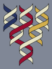
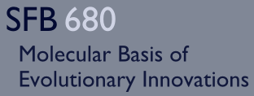

Upcoming events
Workshops and Seminar Days
Workshop
Perspectives in Biophysics 
February 08, 8:00 - 12:15, Institute for Genetics, Lecture Hall, Ground Floor
February 09, 8:45 - 12:15, Biocenter, Lecture Hall, Ground Floor
February 09, 8:45 - 12:15, Biocenter, Lecture Hall, Ground Floor
Cologne Spring Meeting 2012
February 22- 24
Institute of Physics, University of Cologne
Institute of Physics, University of Cologne
Satellite Meeting
Viral Evolution: Linking Genetics to Epidemics
February 24- 25
University of Cologne
University of Cologne
Colloquia
Simon Weinberger, Technau Lab, Faculty of Life Sciences, University of Vienna
The starlet sea anemone Nematostella vectensis as a model for Evo-Devo: investigations of body axis formation
Friday, November 4, 2011, 2:00 pm
Biocenter, Zülpicher Str. 47b, Seminar Room 3.003, 3rd floor
Journal Club
Following Journal Club Dates
2011: November 24, December 15
2012: January 26, March 22, April 19
Four O'Clock Evolution Tea
Every Thursday, 16:00
Institute of Theoretical Physics, Zülpicher Str. 77, Room 104k
Guests are welcome!